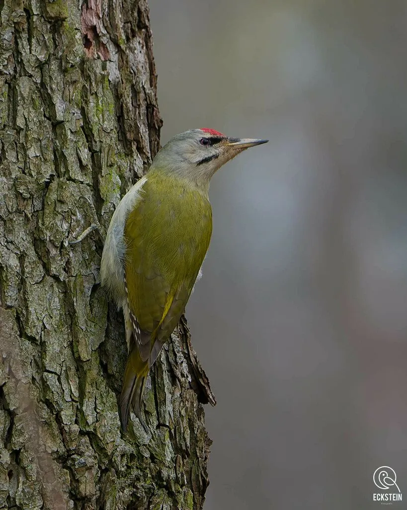

鸟类 · 动物界
灰头绿啄木鸟 Picus canus

绿色羽衣、灰色头部的啄木鸟，雄鸟头顶有红斑。常在林下地面取食蚂蚁，也能在树干上凿洞，鸣声似笑声。
- 分类
- 门脊索动物门纲鸟纲目䴕形目科啄木鸟科属绿啄木鸟属
- 栖息环境
- 阔叶林、针阔混交林、公园、果园、行道树与村落林缘，偏好有老树和枯木的环境。
- 地理分布
- 欧亚大陆广布，中国大部分地区有分布，包括东北、华北、西南及华南。
- 保护级别
- IUCN 红色名录列为无危（LC）；中国列入“三有”陆生野生动物名录。
物种志
灰头绿啄木鸟体长约二十五至二十八厘米，体重一百至一百四十克。上体草绿色，腰部鲜黄绿色，飞羽具黑白横斑；头部灰色，雄鸟头顶至枕部有红色斑块，雌鸟无红斑；眼先和颊部黑色，喉部灰白。喙直而尖，灰黑色；虹膜淡黄，脚灰绿色，两趾向前两趾向后，适合攀树。
它栖息于阔叶林、混交林、公园、果园与村落林缘，常单独活动。与多数啄木鸟不同，它常在地面或倒木上觅食，用强壮的喙刨开蚁巢，取食蚂蚁、蚂蚁卵和其他昆虫，也吃浆果和种子。繁殖期在树干上凿洞营巢，每窝产卵五至七枚。鸣声为连续而响亮的“咯—咯—咯”，似笑声，春季常边飞边叫。灰头绿啄木鸟广泛分布于欧亚大陆，中国大部分地区可见，是森林害虫的重要控制者，列入“三有”名录。
形态与习性
- 体长25–28 厘米
- 体重100–140 克
- 食性蚂蚁为主，兼食其他昆虫、浆果
- 繁殖树干凿洞营巢，每窝 5–7 枚
- 特征灰头绿身，雄鸟头顶红斑
- 保护级别IUCN 无危；“三有”动物
趣味知识
- 经常下到地面刨开蚁巢，是少见的“地栖”啄木鸟。
- 鸣声像一串响亮的笑声，春季很远就能听到。
- 雄鸟头顶红斑，雌鸟头部纯灰，可据此分辨性别。
生态关系
- 栖息 → 马尾松 在树干凿洞取食与营巢